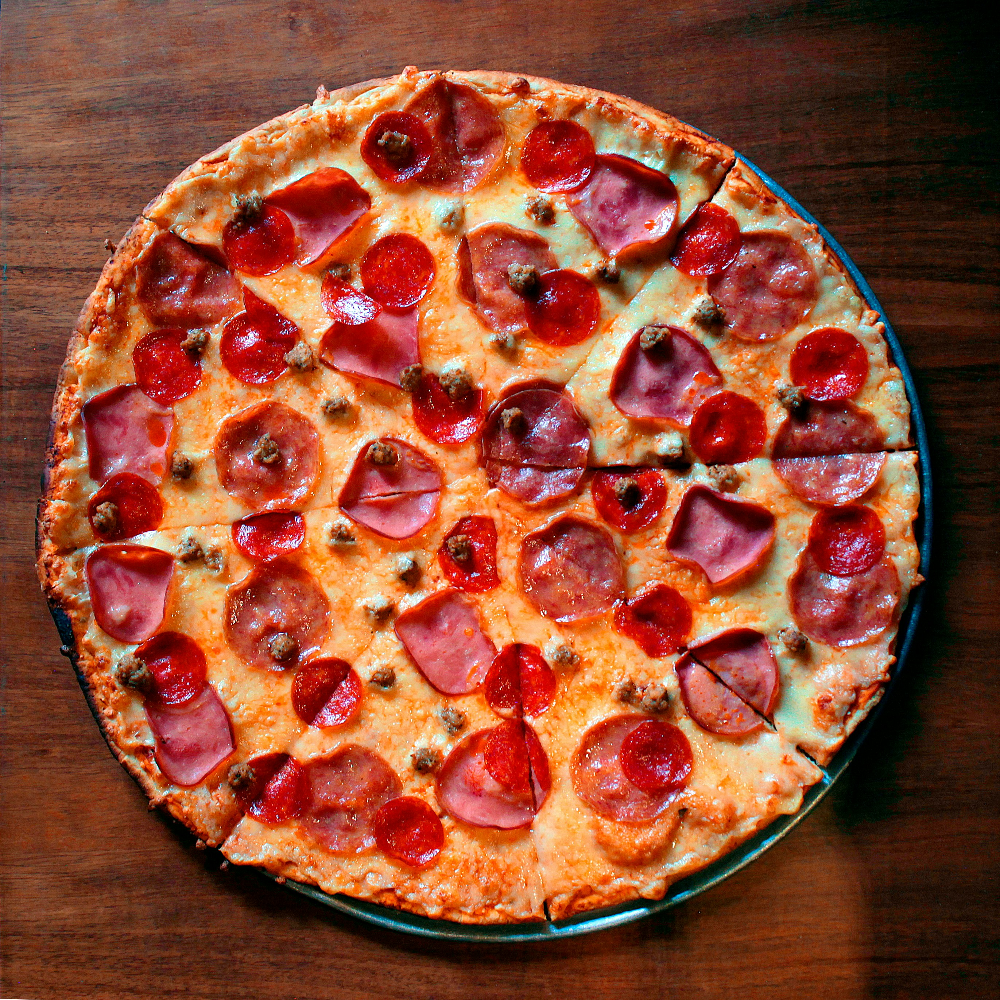

Pizza

Pepperoni Cheese Pizza
Pepperoni is an American variety of spicy salami made from cured pork and beef seasoned with paprika and chili peppers.
Ingredients
- 16 ounces pizza dough, store-bought or homemade
- 1/2 cup pizza sauce
- 18 to 20 slices pepperoni
- 12 ounces mozzarella cheese, grated
- 1/2 teaspoon ground black pepper
- 1 teaspoon fresh oregano, optional
- Flour for rolling and shaping dough
Steps
- Preheat the oven to 500°F:
- Make the sauce
- Roll out dough on a lightly floured surface. If it's hard to roll, let it rest for 5 minutes so it can come to room temperature. For a large pizza, I like to roll my dough into about a 14-inch diameter circle.
- Transfer the dough to a lightly dusted pizza peel. Alternatively, fit it into a large cast-iron.
Add sauce in a light layer all over the pizza, leaving about 1/4-inch crust around the edges. Chop half of the pepperoni and sprinkle it over the sauce. Top the pizza with grated cheese and the rest of the pepperoni. Season with black pepper.
-
If you're using a pizza stone, carefully slide pizza into the center of the preheated pizza stone. Cook for 6 minutes, then rotate the pizza halfway so it cooks evenly. Cook for another 6 to 8 minutes, or until the crust is golden brown and charred in spots.
-
Use pizza peel to slide pizza out onto a cutting board. Let the pizza rest for a minute and slice into pieces. Season with fresh oregano (optional). Serve while warm with a side salad.
Odin Recipes